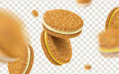

Какво е живота и къде е?
Вглъбен в проекта, вече си вътре в екрана на компютъра, чудейки се за следващия таг, вече си представяш и кабелите вътре. Дали нещо жиците не са се оплели, та да не тръгва програмата. Даже CSS-Validator не разбира какво искаш да направиш. В един момент се отдръпваш, както те е учила Милена и се питаш, има ли и друг живот? Момент, какво е това Живот? В превод от Руски език значи корем, казва Google Translate. Излиза, че живота е в корема! Какво си го зяпнал този екран?
Зависнал в Нета, отварям сайт след сайт, след „Cookies“, а някои се ронят и трохите се завират под клавишите. Ще трябва да „изтръскам“ клавиатурата, има нещо отдолу и подпира клавиша „Enter“. Пък аз си го ползвам, за да не си напрягам очите да целя по екрана с мишката, ситните бутончета на някой скръндзъв УЕБ програмист. Но повече ме притесняват, тези „Cookies“, които попадат в устата ми, ще стана да се пораздвижа малко. Пък и да намеря едно огледало да видя да не съм заприличал на Jabba the Hutt, щото кантарчето лъже…
